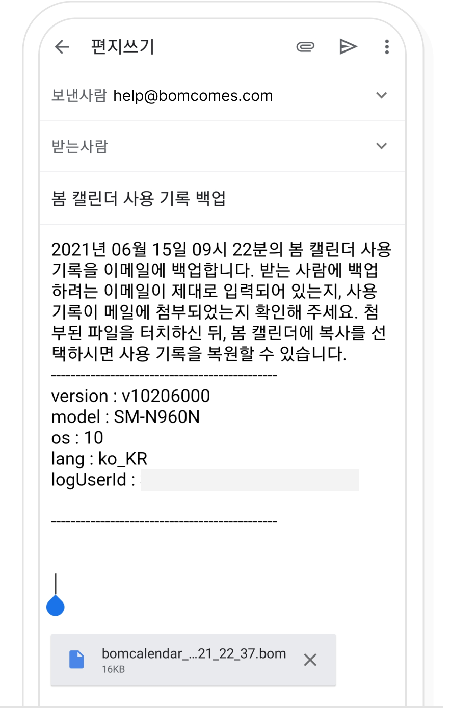
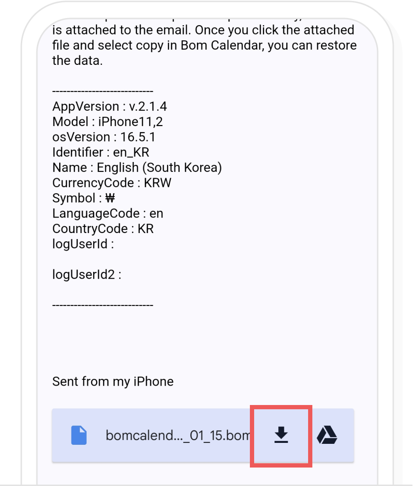

-
1
사용 기록 내보내기
봄 캘린더 설정 > 개인/보안/백업에서 '사용 기록을 파일로 백업'을 선택해주세요.

백업 하려는 메일이나 클라우드 어플을 선택해주세요.

백업을 메일에 하려면
사용 기록이 메일에 첨부되었는지 확인하고,
받는 사람에 백업할 이메일 주소를 입력한 뒤
메일 발송을 선택해주세요.
메일을 발송하면 받는 메일로 사용 기록 파일이 보내집니다.백업을 클라우드에 하려면
저장하려는 계정이 맞는지 확인 후 저장을 선택해주세요.
저장을 선택하면 클라우드에 사용 기록 파일이 저장됩니다.
-
2
메일에서 복원하기
백업을 메일에 했다면 메일을 선택한 뒤 첨부된 사용 기록 파일을 선택해주세요.
사용할 애플리케이션에서 봄 캘린더를 선택하시면 사용 기록을 복원할 수 있습니다.

-
3
클라우드에서 복원하기
백업을 클라우드에 했다면 백업한 클라우드를 실행해 주세요.

클라우드에 저장된 백업 파일을 선택하면 사용 기록을 복원할 수 있습니다.